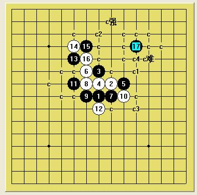

有助于你提高拆棋水平的两道寒恒经典题（空间压迫与边线摧残）
#1 有助于你提高拆棋水平的两道寒恒经典题（空间压迫与边线摧残） 作者：小天元子 发表时间：2009-6-25 8:06:37
题目1：4.5星级
=======上图对应的爱五子棋谱代码如下，以便你拆解：========
h8i9h10h9j9g10i8g9g8j8f9h7f11f12
======================================================
黑先胜
题目2：5星级
=======上图对应的爱五子棋谱代码如下，以便你拆解：========
h8i9h10h9j9g10i8g9g8j8f9h7f11f10
======================================================
黑先胜
［ 快乐天羽 于 2009-6-25 19:44:17 时奖励此帖[金币加 20 威望加1］
#2 Re:有助于你提高拆棋水平的两道寒恒经典题（空间压迫与边线摧残） 作者：小天元子 发表时间：2009-6-25 11:47:05
这两道题目比较难呀，一时之间是拆不出的，如果拆不动，拆这个11吧，听说也是必胜的
=======上图对应的爱五子棋谱代码如下，以便你拆解：========
h8i9h10h9j9g10i8g9g8j8e9
======================================================
#3 Re:有助于你提高拆棋水平的两道寒恒经典题（空间压迫与边线摧残） 作者：yoda 发表时间：2009-6-25 13:13:49
拆了拆第一题，黑胜法有一手挺妙的。
=======上图对应的爱五子棋谱代码如下，以便你拆解：========
h8i9h10h9j9g10i8g9g8j8f9h7f11f12g12g11k10l11h13i14f13e13c10
======================================================
=======上图对应的爱五子棋谱代码如下，以便你拆解：========
h8i9h10h9j9g10i8g9g8j8f9h7f11f12g12e10k10l11i13
======================================================
#4 Re:有助于你提高拆棋水平的两道寒恒经典题（空间压迫与边线摧残） 作者：小天元子 发表时间：2009-6-25 13:14:42
李老师，我不是用这个17手呵，我的17手天外飞仙
#5 Re:有助于你提高拆棋水平的两道寒恒经典题（空间压迫与边线摧残） 作者：四川连珠魂 发表时间：2009-6-25 13:30:13
李老师拆的19我也研究过，不过有2个20要请教，我没找到杀。
=======上图对应的爱五子棋谱代码如下，以便你拆解：========
h8h9h10i9j9g10i8g9g8j8k10l11f9h7f11f12g12e10i13h11
======================================================
=======上图对应的爱五子棋谱代码如下，以便你拆解：========
h8h9h10i9j9g10i8g9g8j8k10l11f9h7f11f12g12e10i13i10
======================================================
#6 Re:有助于你提高拆棋水平的两道寒恒经典题（空间压迫与边线摧残） 作者：yoda 发表时间：2009-6-25 13:44:30
=======上图对应的爱五子棋谱代码如下，以便你拆解：========
h8i9h10h9j9g10i8g9g8j8f9h7f11f12g12e10k10l11i13h11i12i14j11h13j10
======================================================
=======上图对应的爱五子棋谱代码如下，以便你拆解：========
h8h9h10i9j9g10i8g9g8j8f9h7f11f12g12e10k10l11i13i10h12
======================================================
#7 Re:有助于你提高拆棋水平的两道寒恒经典题（空间压迫与边线摧残） 作者：小点心 发表时间：2009-6-25 13:45:56
=======上图对应的爱五子棋谱代码如下，以便你拆解：========
h8h9h10i9j9g10i8g9g8j8f9h7f11f12g12g11j11
======================================================
=======上图对应的爱五子棋谱代码如下，以便你拆解：========
h8h9h10i9j9g10i8g9g8j8f9h7f11f12g12g11k11
======================================================
#8 Re:有助于你提高拆棋水平的两道寒恒经典题（空间压迫与边线摧残） 作者：小点心 发表时间：2009-6-25 13:47:26
=======上图对应的爱五子棋谱代码如下，以便你拆解：========
h8h9h10i9j9g10i8g9g8j8f9h7f11f12g12e10j12
======================================================
#9 Re:Re:有助于你提高拆棋水平的两道寒恒经典题（空间压迫与边线摧残） 作者：小天元子 发表时间：2009-6-25 13:54:23
7、8L很有潜力，但还差点，既然李老师都来了，那我就把第一题答案公布下

这个17必胜，我只能告诉你们到这里了，剩下自己拆去吧，一会去拍毕业照了，今天分了学士服
说天外飞仙，再恰当不过
#10 Re:有助于你提高拆棋水平的两道寒恒经典题（空间压迫与边线摧残） 作者：四川连珠魂 发表时间：2009-6-25 13:56:58
=======上图对应的爱五子棋谱代码如下，以便你拆解：========
h8h9h10i9j9g10i8g9g8j8k10l11f9h7f11f12g12e10i13h11i12i14j11h13j10k11
======================================================
请教这个26怎么杀呢
#11 Re:有助于你提高拆棋水平的两道寒恒经典题（空间压迫与边线摧残） 作者：四川连珠魂 发表时间：2009-6-25 13:58:42
第1题我的杀好像简单点呢。
=======上图对应的爱五子棋谱代码如下，以便你拆解：========
h8h9h10i9j9g10i8g9g8j8k10l11f9h7f11f12g12g11h13i14f13
======================================================
#12 Re:Re:有助于你提高拆棋水平的两道寒恒经典题（空间压迫与边线摧残） 作者：yoda 发表时间：2009-6-25 14:03:48
10L后9M
引用：
原文由 四川连珠魂 发表于 2009-6-25 13:56:58 :
=======上图对应的爱五子棋谱代码如下，以便你拆解：========
h8h9h10i9j9g10i8g9g8j8k10l11f9h7f11f12g12e10i13h11i12i14j11h13j10k11
======================================================请教这个26怎么杀呢
#13 Re:有助于你提高拆棋水平的两道寒恒经典题（空间压迫与边线摧残） 作者：四川连珠魂 发表时间：2009-6-25 14:08:55
恩，老师是细致，我刚才用旧版的bestmove也算到了9m这个杀点，黑石是有点犯晕，呵呵，谢谢指点，不过楼主第2个问题，我拆到下面这个局面没终结掉
=======上图对应的爱五子棋谱代码如下，以便你拆解：========
h8h9h10i9j9g10i8g9g8j8k10l11f9h7f11f10g12e10
======================================================
#14 Re:有助于你提高拆棋水平的两道寒恒经典题（空间压迫与边线摧残） 作者：yoda 发表时间：2009-6-25 14:30:17
抱歉，前面在拆第二道题。刚验证完毕。
16-11E胜法一样。
=======上图对应的爱五子棋谱代码如下，以便你拆解：========
h8i9h10h9j9g10i8g9g8j8f9h7f11f10e10d11g12h13e6e8f5
======================================================
［ 快乐天羽 于 2009-7-4 15:03:41 时奖励此帖[金币加 20 威望加1］
#15 Re:Re:有助于你提高拆棋水平的两道寒恒经典题（空间压迫与边线摧残） 作者：yoda 发表时间：2009-6-25 14:32:40
不客气。你摆的这个图我没考虑，一般情况下黑在白棋厚壁上作战比较勉强。
引用：
原文由 四川连珠魂 发表于 2009-6-25 14:08:55 :
恩，老师是细致，我刚才用旧版的bestmove也算到了9m这个杀点，黑石是有点犯晕，呵呵，谢谢指点，不过楼主第2个问题，我拆到下面这个局面没终结掉
=======上图对应的爱五子棋谱代码如下，以便你拆解：========
h8h9h10i9j9g10i8g9g8j8k10l11f9h7f11f10g12e10
======================================================
#16 Re:有助于你提高拆棋水平的两道寒恒经典题（空间压迫与边线摧残） 作者：四川连珠魂 发表时间：2009-6-25 14:48:57
=======上图对应的爱五子棋谱代码如下，以便你拆解：========
h8h9h10i9j9g10i8g9g8j8k10l11f9h7f11f10e10g12
======================================================
这个18好像也比较强
#17 Re:有助于你提高拆棋水平的两道寒恒经典题（空间压迫与边线摧残） 作者：yoda 发表时间：2009-6-25 14:52:58
23后必胜形，11不交换也是这样胜。
=======上图对应的爱五子棋谱代码如下，以便你拆解：========
h8i9h10h9j9g10i8g9g8j8k10l11f9h7f11f10e10g12e11g11g13e9h12
======================================================
#18 Re:有助于你提高拆棋水平的两道寒恒经典题（空间压迫与边线摧残） 作者：忧郁的双眼 发表时间：2009-6-25 15:37:21
哇咧
老师很有战斗力啊
#19 Re:有助于你提高拆棋水平的两道寒恒经典题（空间压迫与边线摧残） 作者：四川连珠魂 发表时间：2009-6-25 15:53:01
 已经地毯完成这个6手，再次感谢李老师的细心指点。
已经地毯完成这个6手，再次感谢李老师的细心指点。
#20 Re:Re:有助于你提高拆棋水平的两道寒恒经典题（空间压迫与边线摧残） 作者：小天元子 发表时间：2009-6-25 16:14:36
引用：
原文由 yoda 发表于 2009-6-25 14:30:17 :抱歉，前面在拆第二道题。刚验证完毕。
16-11E胜法一样。
=======上图对应的爱五子棋谱代码如下，以便你拆解：========
h8i9h10h9j9g10i8g9g8j8f9h7f11f10e10d11g12h13e6e8f5
======================================================毕业照拍回来了，李老师果然不同凡响，第二道题目你答对了
#21 Re:有助于你提高拆棋水平的两道寒恒经典题（空间压迫与边线摧残） 作者：小天元子 发表时间：2009-6-25 16:16:39
这2道题目与明3那4道骗招题不是一个类型的，这两道更考察大局观与棋子间的牵制连接#22 Re:有助于你提高拆棋水平的两道寒恒经典题（空间压迫与边线摧残） 作者：小天元子 发表时间：2009-6-25 16:25:10
=======上图对应的爱五子棋谱代码如下，以便你拆解：========
h8i9h10h9j9g10i8g9g8j8f9h7f11f10e10d11
======================================================
这个16还有另外一种杀法，我的杀法和你不一样
#23 Re:有助于你提高拆棋水平的两道寒恒经典题（空间压迫与边线摧残） 作者：小天元子 发表时间：2009-6-25 16:40:39
=======上图对应的爱五子棋谱代码如下，以便你拆解：========
h8h9h10i9j9g10i8g9g8j8k10l11f9h7f11f10g12e10
======================================================
这个17扫下去很舒服，但是这个18阻断性很强，使左下那路残废掉，稍微分析下就可以否定这个17的，
#24 Re:有助于你提高拆棋水平的两道寒恒经典题（空间压迫与边线摧残） 作者：快乐天羽 发表时间：2009-7-4 15:05:28
这个变化，我也可以提供个黑可必胜的思路，供大家参考，个人感觉也比较简单
=======上图对应的爱五子棋谱代码如下，以便你拆解：========
h8h9h10i9j9g10i8g9g8j8k10l11k8
======================================================
#25 Re:有助于你提高拆棋水平的两道寒恒经典题（空间压迫与边线摧残） 作者：松风竹影 发表时间：2009-7-4 23:52:56
=======上图对应的爱五子棋谱代码如下，以便你拆解：========
h8h9h10i9j9g10i8g9g8j8k10l11k8k7
======================================================怎么杀这个14手呢
#26 Re:有助于你提高拆棋水平的两道寒恒经典题（空间压迫与边线摧残） 作者：茗弈七夜 发表时间：2010-8-17 16:30:59
=======上图对应的爱五子棋谱代码如下，以便你拆解：========
h8h9h10i9j9g10i8g9g8j8k10l11k8k7l9
======================================================